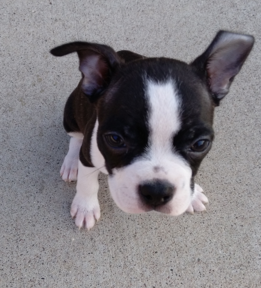

Freckles was a Boston Terrier that my family had and he was the
most loyal dog you can ever hope to have. He loved people and
was soft, cuddly, warm, and loved being hugged. He loved eating
and enjoyed whatever snacks we gave him. He loved dog treats,
strawberries, bananas, apples, and rotisserie chicken. It was
a joy to feed him these snacks and whenever he thought we
were eating something he would beg for a treat as well and we
would usually give it to him. He grew rather big due to how
many snacks he consumed. Freckles wasn't the biggest on exercise
and at times just preferred to stay indoors but he did enjoy
chasing rabbits around in the backyard during the summer.
However, whenever we would go outside he would bark, wanting to
come outside with us. However, he would quickly return home after a
few minutes when he decided he had enough fresh air.
Freckles would never hurt anyone, he would usually never bite a human.
He did bark a lot though. He was always there to greet me when
I came home from school.
However, Freckles would in his later life experience seizures
and in February of 2024 became quite ill. He lost his appetite
and started pacing around the house without rest. We tried to
feed him and have him drink water but eventually he would start
refusing food. He lost weight and eventually started having
trouble breathing. On February 22, 2024, Freckles passed
away.
The house is empty and quiet without him and it feels as if I
have massive hole in my heart. This page was created as a tribute
to immortalize this faithful furry friend.
Freckles lived a good life, he had many snacks and received many
hugs and got to bark a lot. He wasn't the most obedient at times
but we still loved him. I miss him and I hope he is in a better
place, where he can eat all the snacks he wants and lie in
the sun for as long as he wants and will never ever experience
any more pain.
I love you Freckles,
and I will love you until the end of time <3.
Rest In Peace Freckles, June 13, 2015 - February 22, 2024
I have included pictures of him throughout his life and hopefully this will be preserved for a long time.
